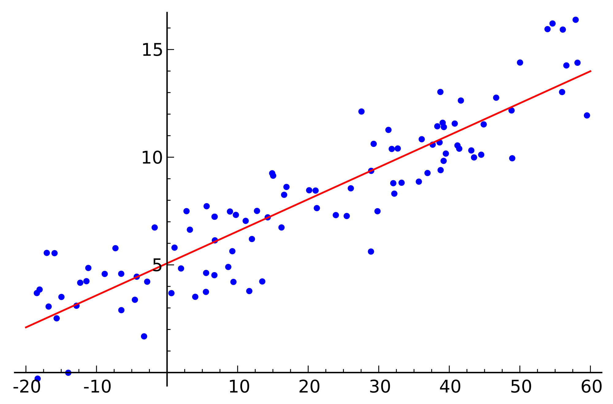
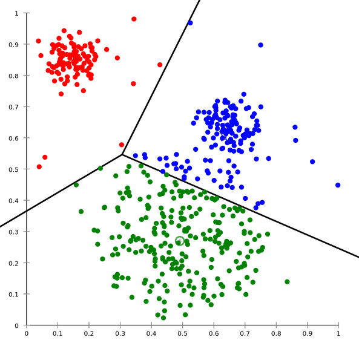
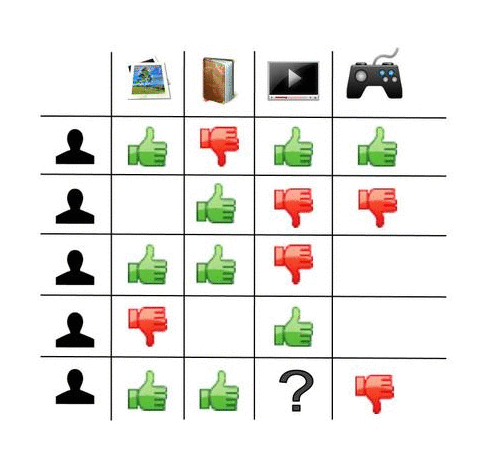
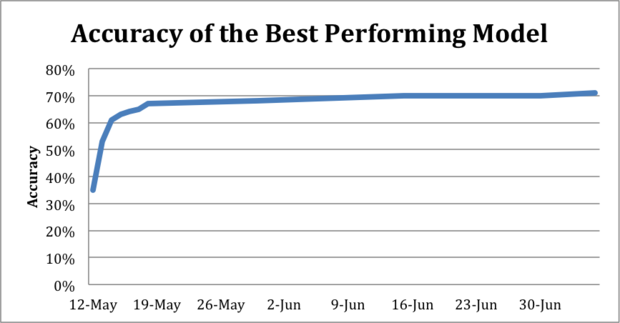

Machine Learning
Applications and practices
Main applications for the web
- Classification
- Regression
- Clustering
- Recommendation
Classification
example: Sentiment analysis

Regression
example: Price estimation

Clustering
example: Personas

Recommendation
example: Collaborative filtering

Issues
- Data: "garbage in, garbage out"
- Model: "nobody is perfect"
Data issues
- Harvest (quantity)
- Cleaning (quality)
- Integration (pertinency)
Model issues
Choosing an algorithm
Reaching 100% accuracy?

by Crowdflower
Go live and update